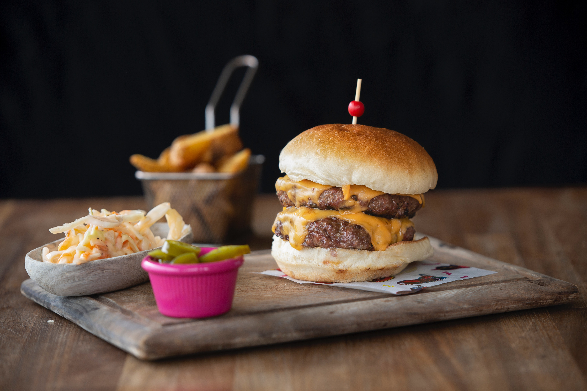

About Us
We welcome you to sit back, unwind and appreciate the lovely sights and hints of the ocean while our best gourmet expert sets you up a scrumptious dinner utilizing the best and freshest ingredients.’Company Name’s legacy comes from The parent Restaurant which was built up in 1963.
A hamburger is a food consisting of fillings —usually a patty of ground meat, typically beef—placed inside a sliced bun or bread roll
Noodles are a type of food made from unleavened dough which is rolled flat and cut, stretched or extruded, into long strips or strings


French fries, chips, finger chips, french-fried potatoes, or simply fries, are batonnet or allumette-cut deep-fried potatoes, disputed origin from Belgium and France.
The stereotypical French breakfast is a hot drink, usually coffee or tea, and a tartine, which is a baguette, sliced horizontally
